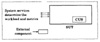
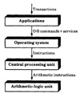

| Previous | Table of Contents | Next |
“Would you tell me, please, which way I ought to go from here?”
“That depends a good deal on where you want to get to,” said the Cat.
“I don’t much care where —” said Alice.
“Then it doesn’t matter which way you go,” said the Cat.
— Lewis Carroll, Alice’s Adventures in Wonderland
The workload is the most crucial part of any performance evaluation project. It is possible to reach misleading conclusions if the workload is not properly selected. When the conclusions of a study are found to be unacceptable, the inappropriateness of the workload is commonly used as a criticism of the study. Like other aspects of performance evaluation, proper selection of workloads requires many considerations and judgments by the analyst, which is a part of the art of performance evaluation that comes with experience. In this chapter, a number of considerations are described that will help you make the right selection and justify your choice.
The four major considerations in selecting the workload are the services exercised by the workload, the level of detail, representativeness, and timeliness. These are discussed in the next four sections. Other minor considerations, such as loading level, impact of other components, and repeatability, have been grouped together in Section 5.5.
The best way to start the workload selection is to view the system as a service provider. As discussed in Part I, each system provides a number of services, and making a list of services is one of the first steps in a systematic performance evaluation study. Often the term System Under Test (SUT) is used to denote the complete set of components that are being purchased or being designed by the organization. Sometimes there is one specific component in the SUT whose alternatives are being considered. This component is called Component Under Study (CUS) as shown in Figure 5.1. For example, a Central Processing Unit (CPU) design team might want to understand the impact of different Arithmetic-Logic Unit (ALU) organizations. In this case, the CPU is the SUT and the ALU is the CUS. Similarly, a bank purchasing a transaction processing system may want to compare different disk devices. In this case, the transaction processing system is the SUT and the disk devices are the CUS. Clearly, identifying the SUT and CUS is important since the workload as well as the performance metrics are determined primarily by the SUT. Confusing CUS with SUT and vice versa is a common mistake that leads to misleading results. In the remainder of this chapter, the word system will be used to mean SUT and the word component will be used to mean CUS.
The metrics chosen should reflect the performance of services provided at the system level and not at the component level. For example, the MIPS is a justifiable metric for comparing two CPUs, but it is not appropriate for comparing two timesharing systems. The CPU is only one component of the timesharing system. A timesharing system may provide services such as transaction processing, in which case the performance would be measured by transactions (as opposed to instructions) per second.
The basis for workload selection is also the system and not the component. For example, the services provided by the CPUs are the so-called instructions, and the CPU designers may want to use instruction frequency as a possible representation of workload. The services provided by the turn-key banking systems are generally called “transactions,” and so the bank may use the transaction frequencies as the workload. Notice that using instruction frequencies to specify the workload of a banking system is not appropriate, since the performance of the banking system depends on several components in addition to that of the CPU. Similarly, using transactions to compare two CPUs may or may not be appropriate, since the performance may be affected by other components such as I/O devices. However, if a manufacturer offers two banking systems that are identical except for the CPUs, the two systems can be compared using transaction frequencies as the workload. This latter study may sometimes be inaccurately referred to as the comparison of the two CPUs.

FIGURE 5.1 The SUT and CUS.
If the system provides multiple services, the workload should exercise as complete a set of services as possible. Thus, it is inappropriate to measure the performance of an ALU that provides both floating and integer arithmetic by only using an integer workload. In this case, the workload does not exercise all the key services provided by the system.
In considering the services exercised, also take into account the purpose of the study. A workload may exercise the most efficient features of the system or the least efficient. For example, a graphics editor may not be an efficient text editor. Thus, a text-editing workload used to compare two editors may bring out the worst in the graphics editor and vice versa. A text-editing workload is not appropriate if the purpose of the study is to find an editor to be used primarily for graphics work.
To summarize the discussion so far, the requests at the service-interface level of the SUT should be used to specify or measure the workload, and one should carefully distinguish between the SUT and CUS since it is easy to confuse one for the other.
The types of workloads discussed in Chapter 4 can be shown to be an application of the principle outlined here. Figure 5.2 shows a hierarchical view of a timesharing system. A user typically types in a high-level request, for example, to make a withdrawal from a bank account. The application software may translate the transaction into a number of requests for the operating system. These requests in turn make a number of requests to be executed by various hardware components of the system, which may include a number of specialized processors, general purpose processors, I/O devices, and network links. The CPU requests may be translated into a number of instructions, each of which may make one or more requests to the ALU. Thus, as shown in Figure 5.2, there is a hierarchy of interfaces at which the requests are serviced. A single request at a higher level may result in one or more requests at the lower level. As shown in the figure, the interface levels are:
The workload could be described by summarizing the requests at any one of these interface levels, depending upon what constitutes the SUT. If two ALUs are being compared, that is, the ALUs are the systems, the arithmetic instructions constitute the services or requests. The appropriate workload in this case is to specify the frequency of various arithmetic instructions or to specify the most frequent arithmetic instruction, which may very well be the addition instruction.

FIGURE 5.2 Hierarchical view of timesharing system.
If two CPUs are being compared, the instruction set of the processors constitutes the service provided. One possibility in this case is to use the instruction mix. However, if the performance of one instruction depends upon that of other neighboring instructions, the workload should be specified in terms of a set of instructions that are commonly used together. The popular kernels discussed in Section 4.6 are examples of such sets.
If two systems are being compared at the operating system level, the services provided by the operating systems, including the operating system commands and system services, should form the basis of the workload. In this case, synthetic programs discussed in Section 4.4 can be used.
| Previous | Table of Contents | Next |
){kind=link}
){kind=link}
){kind=link}
){kind=link}